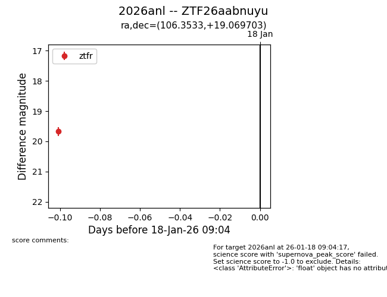
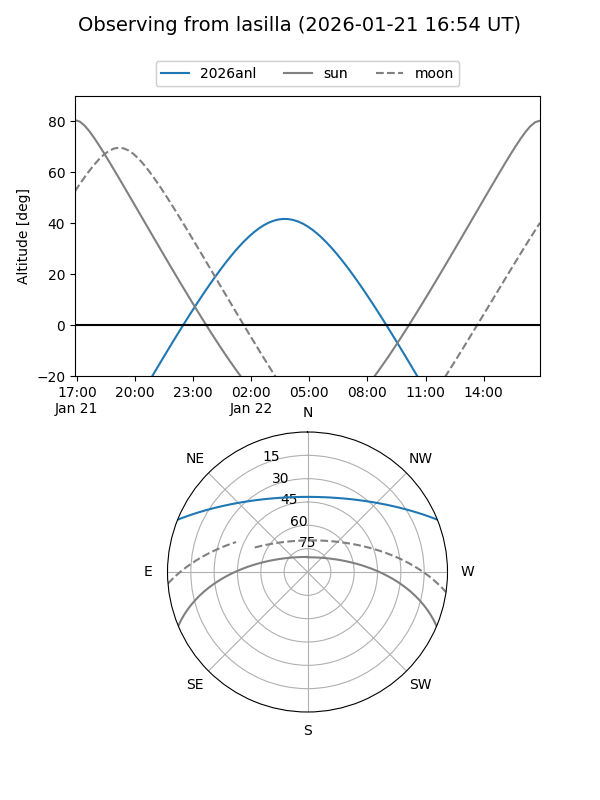
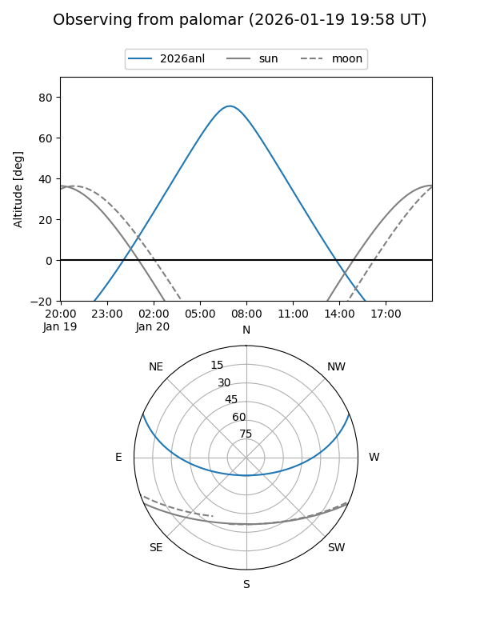
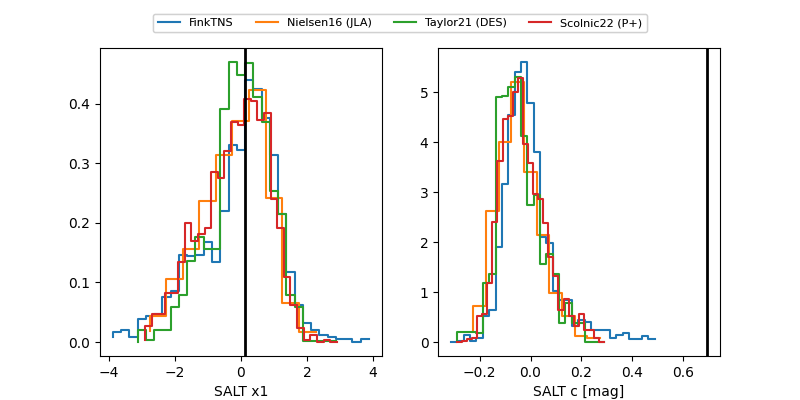

2026anl
Target 2026anl at 2026-01-18 09:05
Aliases and brokers:
FINK: link
Lasair: link
ALeRCE: link
TNS: link
YSE: link
alt names
ZTF26aabnuyu (ztf,fink_ztf)
2026anl (tns,yse)
Coordinates:
equatorial (ra, dec) = 106.3533,+19.06970
equatorial (HMS+DMS) = 07:05:24.80,+19:04:10.93
galactic (l, b) = (197.2689,+11.55094)
Flags:
Photometry:
last ztfr=19.68
1 ztfr detections
Lightcurve

Visibility


Additional plots
